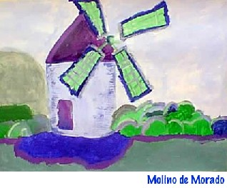

Discapacidad:¿es
que se trata de “seres diferentes”?
Discapacidad:¿es
que se trata de “seres diferentes”?
| Entre los problemas congénitos severos,
se presentan los defectos del tubo neural que afectan el cerebro, el cordón
espinal y/o las membranas que protegen estos órganos. Hay tres tipos
de estos defectos que son: anencefalia, encefalocele y espina bífida.(1) |
|
Entrevista realizada con "Tía Mónica" |
 (2) Pintura de Brenda Alicia, nacida el 21 de septiembre de 1985, padece hidrocefalia y mielomeningocele. Tomado de http://www.espinabifida.org.mx/gal_3.htm |
“Padezco esta enfermedad, que tiene varias consecuencias en la movilidad, así como trastornos en las vías urinarias entre otros, y en el 70 % de las personas afectadas, hidrocefalia(no en mi caso) En Yahoo hay un grupo que lo administran padres, que se llama “mielo” y junto con una abuela de México quien tiene una nieta que padece solamente hidrocefalia y Juan Pablo que tiene espina bífida e hidrocefalia, formamos este grupo en Hotmail que se llama "gente con espina bífida e/o hidrocefalia". Allí entran padres, tíos, abuelos y los que tienen la enfermedad y también alguien con poliomielitis así como gente que sólo ha tenido voluntad de ayudar por que conoce a alguien del grupo. Nosotros lo formamos, con la esperanza de ayudar a otos mostrándoles que se puede seguir adelante. |
“Hace unos días pedí ayuda a
estos grupos en Internet, a objeto me contestaran unas preguntas.
Esto surgió por que alguien del grupo de gente con espina bifida e/o
hidrocefalia, me hizo una consulta,
a lo cual yo respondí debería efectuarla con su médico…
Contestó negativamente; dado que su madre entra con ella a la consulta
y ya está en edad de los 18 a27 años.
Con sorpresa recibí respuesta de 3 padres y 8 jóvenes, no obstante
había pensado que se interesarían más los padres.
Les trasmito los resultados pero, no pondré quienes contestaron. Las
que tienen (*) es que todos
mandaron la misma respuesta
Los padres opinaron:
1) temor a dejarlos salir solos o con amigos*********
2) temor a dejarlos hacer cosas por que piensan que no sabrían hacerla
3) sí!!!! a poder hablar con el médico en privado
4)que se lastime
Los hijos opinaron que notan de sus padres,
lo siguiente:
1)que a veces no les permiten salir solos o con
amigos********
2)hablar con el médico en privado
3)el no dejar las cosas a su alcance y tener que esperar que alguien los ayude
4)sienten que todo se lo facilitan
Sé que pensarán: es fácil hablar
cuando uno no tiene hijos; pero les aseguro, que más difícil es
hablar cuando uno es hija/o siendo un discapacitado y no lastimar a los padres.
Algo importante es que debemos entender que hacerles la vida más fácil,
no va a evitar
que sufran algún día.
No es sencillo “largar” un hijo a la vida, lo sé y más
aún cuando ese hijo tiene una dificultad,
pero pensemos que ahora mamá y papá están … pero
quién de ustedes no sufrió un desengaño,
quién no tuvo un golpe en la calle o fueron a un baile y el muchacho
que les gustaba no las sacó a bailar.
Yo, personalmente, fui a bailes; no podía bailar y la pasaba muy bien
por que me sentía igual a mis amigas.
Se puede dejar a un discapacitado
salir a la vida, ya sea con bastones,valvas o sillón de ruedas,
sé de las limitaciones, las vivo día tras día, pero sé también que hay que saber pedir ayuda eso fue lo que me enseñaron; en la calle…… no arriesgarme, si veo que no puedo… pido ayuda y no me da vergüenza ni miedo. |
Es mejor que ellos enfrenten los problemas ahora
que ustedes pueden ayudarlos, por que quien mejor
que mamá o papá para curar las heridas del cuerpo o las heridas
del alma.
Lo importante es que sepan: eso que les pasa a ellos, también lo vivieron
ustedes, ¿o sólo a los
discapacitados las chicas rechazan?.
Y ahora esto es para ustedes los jóvenes (y los no tanto) los hijos,
ante todo no me vengan
con -no puedo hablar con mis padres-; yo fui joven y también lo pensaba
hasta que aprendí que yo
tenía que demostrar que soy capaz de ser responsable.
Si ustedes quieren más libertad ante todo demuestren que son responsables,
siempre se habla
del derecho del discapacitado pero también tenemos obligaciones.
Les voy a contar algo, cuando tenía 16 años pedí a mi papá
que me dejara ir sola al médico.
Me dijo: ¡¡ no!!..... Lo hablamos varios días hasta que me
propuso algo.
Si quería ir sola el primer día tendría que ir con mi tía
y ella se comportaría como si no estuviera e incluso no entraría
a la consulta; mi primera respuesta fue negativa, hasta que lo pensé
bien y acepté, así fuimos.
Cuando volvimos mi papá preguntó cómo fue, y mi tía
le explicó que me había desenvuelto correctamente,
por lo que aceptó de ahí en más fuera sola.
A esto yo le llamo: -negociar-. Si sus padres tienen
miedos (que es lo más normal del mundo) ustedes
acepten que el primer día ellos controlen, sin ayudarlos. Que hagan de
cuenta que ellos no están,
y cuando regresen, les digan en qué estuvieron bien o mal.
Es una forma de darles tranquilidad a sus padres... Les repito: para lograr
que los padres
les tengan confianza se debe demostrar que uno es responsable y no sólo
es cuestión de proclamarlo”
Ir al grupo 
Mónica Margarita
E-mail: tiamonicadesayunos@hotmail.com
(1)Tomado de http://www.neurorehabilitacion.com/espina_bifida.htm
Algunas direcciones en castellano, donde se puede consultar sobre esta afección:
http://www.nacersano.org/centro/9259_9970.asp
http://www.nichcy.org/pubs/spanish/fs12stxt.htm
http://www.nlm.nih.gov/medlineplus/spanish/ency/article/001558.htm